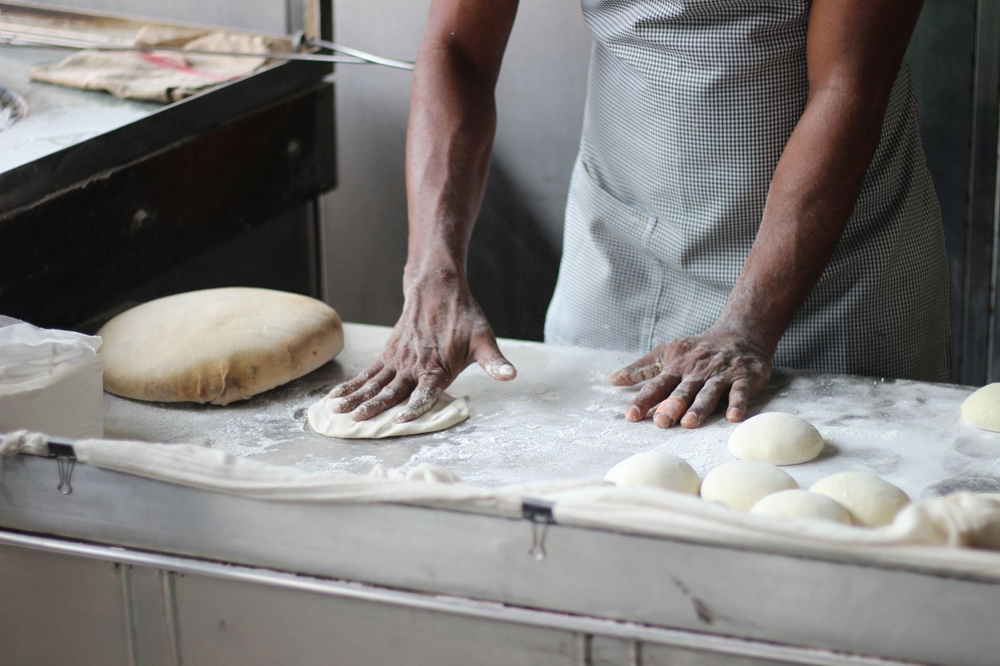

Zuurdesem
Een stevige korst en een luchtige binnenkant. Lekker met alleen wat boter.
Zuurdesem, een croissant of koffie voor onderweg. Bij KORST vind je iets voor iedere trek.
Bekijk het assortiment
Deeg maken, laten rusten en bakken. Daar gaat tijd in zitten. Je proeft het terug in de korst en de structuur van het brood.
We houden het graag eenvoudig. Goed brood, een korte keuze en mensen die je graag helpen kiezen.
Kies wat je wilt meenemen en zet je vraag erbij. Handig als je voor een lunch of een groep wilt bestellen.